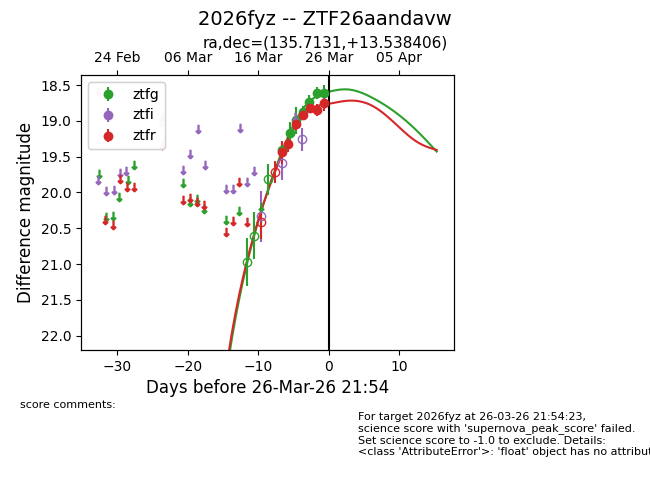
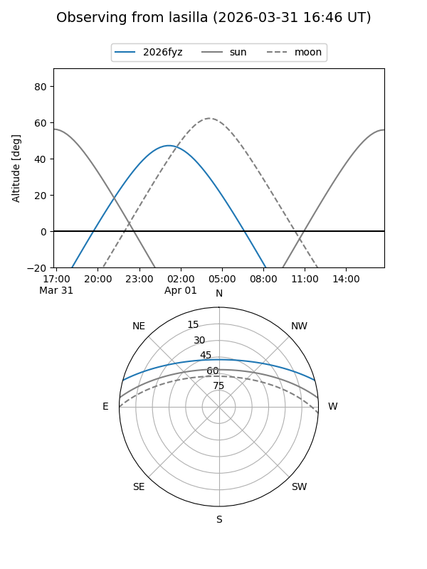
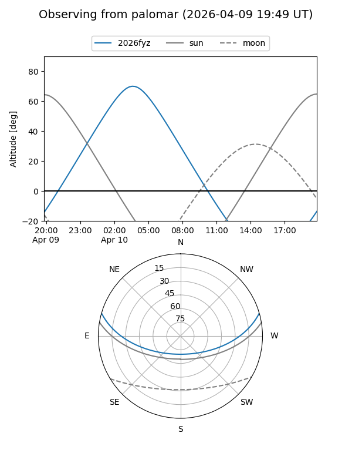
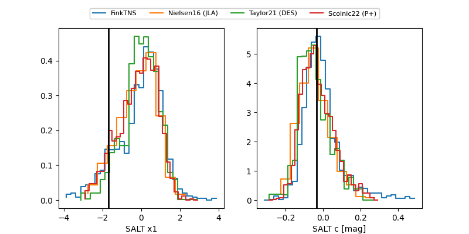

2026fyz
Target 2026fyz at 2026-03-26 21:57
Aliases and brokers:
FINK: link
Lasair: link
ALeRCE: link
TNS: link
YSE: link
alt names
ZTF26aandavw (ztf,fink_ztf)
2026fyz (tns,yse)
Coordinates:
equatorial (ra, dec) = 135.7131,+13.53841
equatorial (HMS+DMS) = 09:02:51.15,+13:32:18.26
galactic (l, b) = (215.1863,+35.17969)
Flags:
Photometry:
last ztfg=18.62, ztfr=18.76
7 ztfg, 7 ztfr detections
Lightcurve

Visibility


Additional plots
